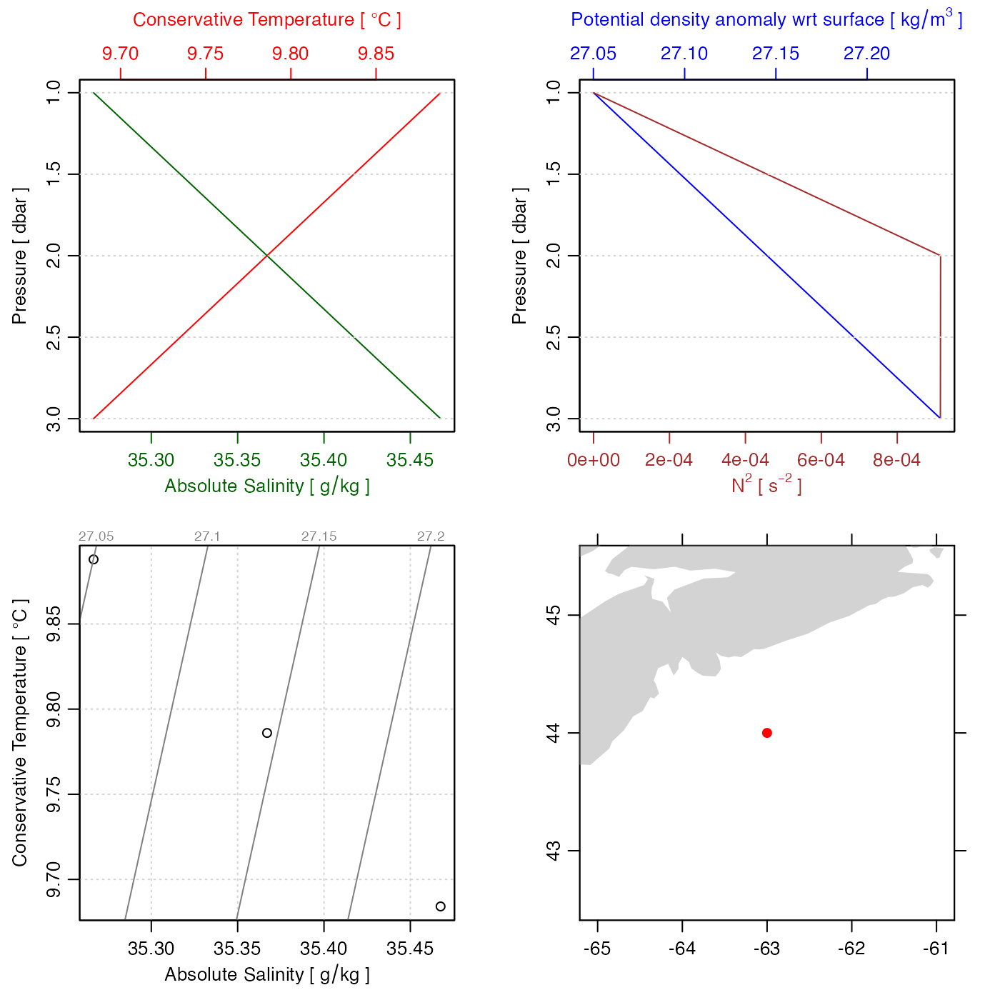

This function creates ctd objects. It is mainly
used by oce functions such as read.ctd() and as.ctd(),
and it is not intended for novice users, so it may change at any time, without
following the usual rules for transitioning to deprecated and defunct status
(see oce-deprecated).
# S4 method for ctd
initialize(
.Object,
pressure,
salinity,
temperature,
conductivity,
units,
pressureType,
deploymentType,
...
)the string "ctd"
optional numerical vector of pressures.
optional numerical vector of salinities.
optional numerical vector of temperatures.
optional numerical vector of conductivities.
optional list indicating units for the quantities specified
in the previous arguments. If this
is not supplied, a default is set up, based on which of the
pressure to conductivity arguments were specified.
If all of those 4 arguments were specified, then units is set
up as if the call included the following:
units=list(temperature=list(unit=expression(degree*C), scale="ITS-90"),
salinity=list(unit=expression(), scale="PSS-78"),
conductivity=list(unit=expression(), scale=""),
pressure=list(unit=expression(dbar), scale=""),
depth=list(unit=expression(m), scale="")). This list is trimmed
of any of the 4 items that were not specified in the previous
arguments. Note that if units is specified, then it is just
copied into the metadata slot of the returned object, so the user
must be careful to set up values that will make sense to other oce
functions.
optional character string indicating the type of pressure;
if not supplied, this defaults to "sea", which indicates the excess of
pressure over the atmospheric value, in dbar.
optional character string indicating the type of deployment, which may
be "unknown", "profile", "towyo", or "thermosalinograph".
If this is not set, the value defaults to "unknown".
Ignored.
To save storage, this function has arguments only for quantities that are often present in data
files all cases. For example, not
all data files will have oxygen, so that's not present here.
Extra data may be added after the object is created, using
oceSetData().
Similarly, oceSetMetadata() may be used to add metadata (station ID, etc),
while bearing in mind that other functions look for such information
in very particular places (e.g. the station ID is a string named station
within the metadata slot). See ctd for more information
on elements stored in ctd objects.
Other things related to ctd data:
CTD_BCD2014666_008_1_DN.ODF.gz,
[[,ctd-method,
[[<-,ctd-method,
as.ctd(),
cnvName2oceName(),
ctd-class,
ctd.cnv,
ctdDecimate(),
ctdFindProfiles(),
ctdRaw,
ctdRepair(),
ctdTrim(),
ctd,
d200321-001.ctd,
d201211_0011.cnv,
handleFlags,ctd-method,
initializeFlagScheme,ctd-method,
oceNames2whpNames(),
oceUnits2whpUnits(),
plot,ctd-method,
plotProfile(),
plotScan(),
plotTS(),
read.ctd.itp(),
read.ctd.odf(),
read.ctd.odv(),
read.ctd.sbe(),
read.ctd.woce.other(),
read.ctd.woce(),
read.ctd(),
setFlags,ctd-method,
subset,ctd-method,
summary,ctd-method,
woceNames2oceNames(),
woceUnit2oceUnit(),
write.ctd()
# 1. empty
new("ctd")
#> ctd object has nothing in its data slot.
# 2. fake data with no location information, so can only
# plot with the UNESCO equation of state.
# NOTE: always name arguments, in case the default order gets changed
ctd <- new("ctd", salinity=35+1:3/10, temperature=10-1:3/10, pressure=1:3)
summary(ctd)
#> CTD Summary
#> -----------
#>
#> * Data Overview
#>
#> Min. Mean Max. Dim. NAs OriginalName
#> pressure [dbar] 1 2 3 3 0 -
#> temperature [°C, ITS-90] 9.7 9.8 9.9 3 0 -
#> salinity [PSS-78] 35.1 35.2 35.3 3 0 -
#>
#> * Processing Log
#>
#> - 2022-01-10 21:12:29 UTC: `create 'ctd' object`
plot(ctd, eos="unesco")
# 3. as 2, but insert location and plot with GSW equation of state.
ctd <- oceSetMetadata(ctd, "latitude", 44)
ctd <- oceSetMetadata(ctd, "longitude", -63)
plot(ctd, eos="gsw")
